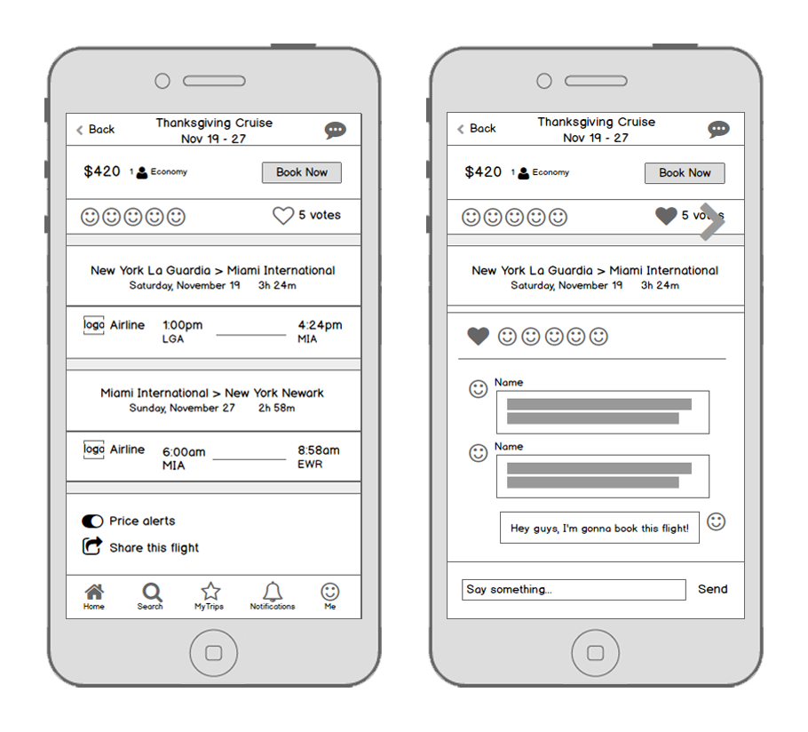
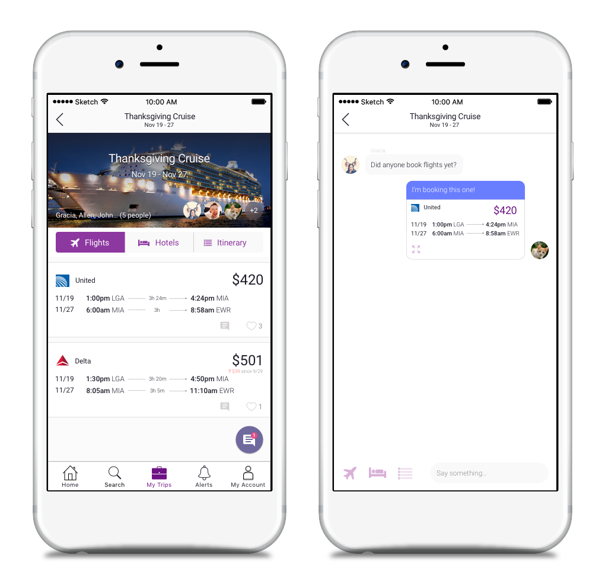
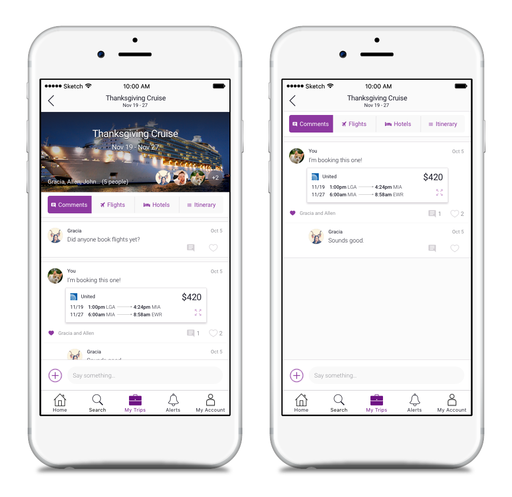
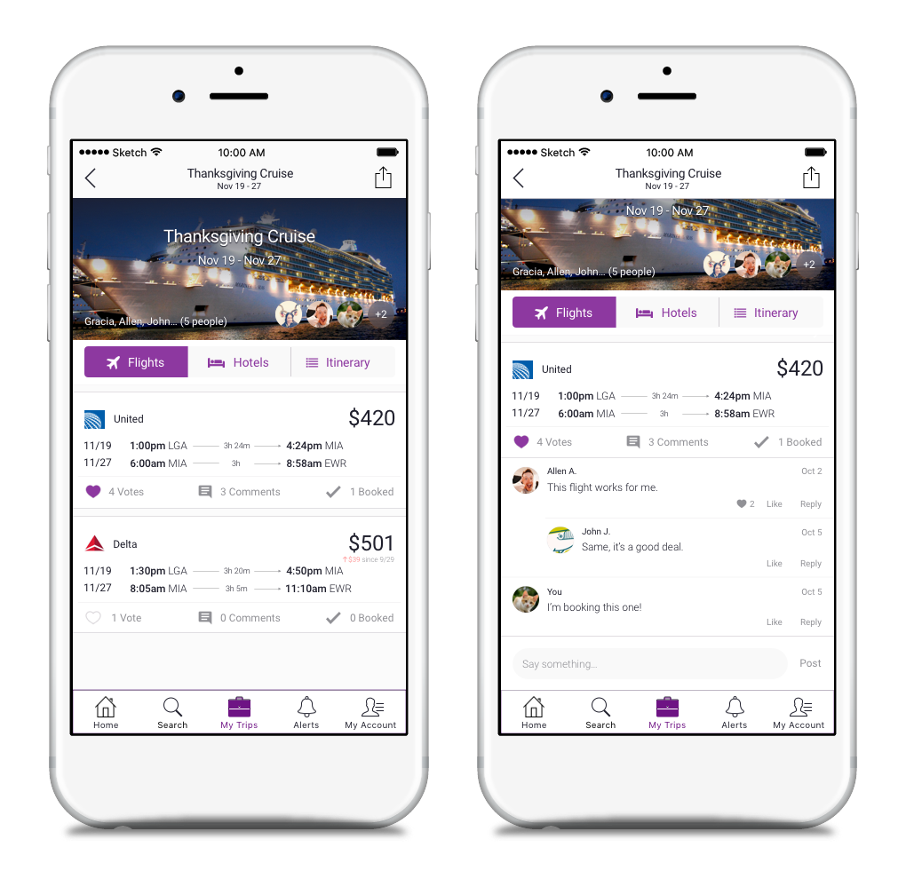

Keep Talking
The most challenging part of this project was designing the best interface for the conversational aspect of this trip planning app. Originally, with the emergence of iOS messaging allowing apps like Evernote to feature message integration, I saw FlyTabs adopting the same function as the main way people can collaborate, especially since most people already use Facebook or Facebook Messenger. Through multiple rounds of testing however, users eventually made evident that an in-app commenting system was the optimal approach, removing the need to jump between apps and break up the conversation. Shown here is the evolution of the social aspect of FlyTabs:
Version 1: This started with a comment section on each particular flight or hotel page. Users are able to share flight details outside of FlyTabs, which is where message integration would take place. This experienced lacked a sense of unity as users would be forced to click into each flight or hotel card to see the conversation or jump over to their messaging app.

Version 2: My testers and I tried out a global chatbox, allowing “tagging” of flights or hotels within the chat bubble so group members can directly access the full details page. After observing how people respond to a group chat versus commenting threads, I realized this format meant endless scrolling for information, which did not help organize the conversation.

Version 3: Next we tried adding a tab for a global commenting section for a particular trip. By making posts static, I imagined the possibility of collapsing or filtering the comments by flight or hotel. However, after testing and discussing with some software engineers, we concluded that altough a sophisticated approach, an unfamiliar interface may not appeal to the typical user.

Version 4: Finally, after learning something new from each iteration, I settled with the collapsible comments attached to each flight or hotel card. This way users are encouraged to stay on topic while discussing their options. With every action associated under the appropriate tab within the group trip page, the entire experience of saving, voting, and commenting feels more unified.
